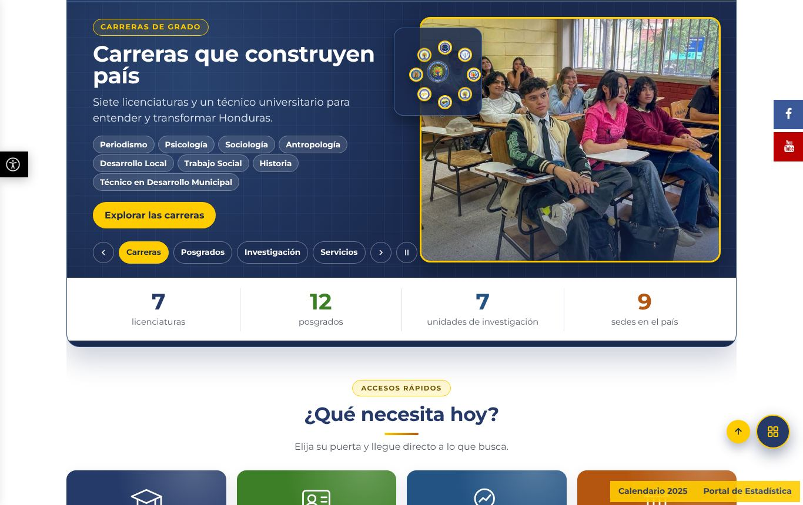
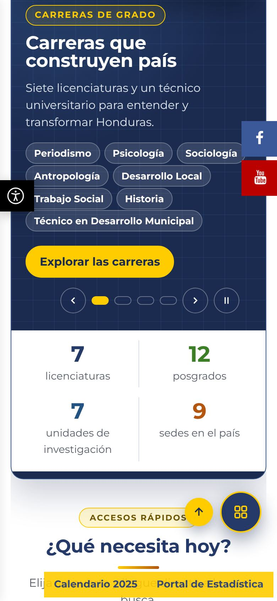

A · Vitrina académica
Pensada como una vitrina ordenada, esta línea recibe al visitante con un banner enmarcado en el que el lema se escribe solo y las cifras de la Facultad cobran vida al aparecer. Las tarjetas, con cabeceras en los colores del escudo, invitan a recorrer carreras, investigación y servicios, y una pequeña videoteca acerca la vida cotidiana de la Facultad.
Recorrer esta propuestaO, si lo prefiere, ir directamente a una página: